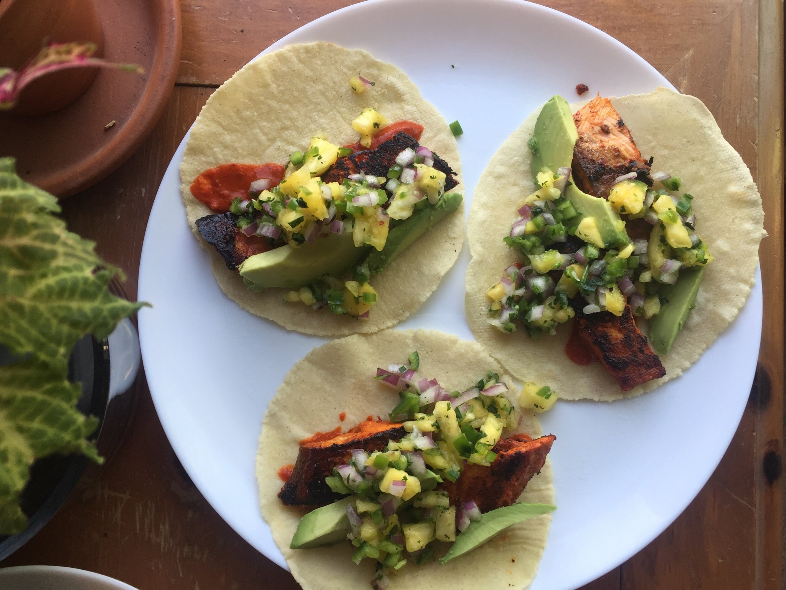

vēnī, vīdī, ēdī
I came, I saw, I ate
I love to eat food. Hence I love to create food. I've got a solar-powered alchemy lab in the backyard where I transform polluted air into vegetables.
I call it the garden and it blows my mind every day.
Check back soon to see more pictures of great food like these fish tacos al pastor!

Check back soon to see more pictures of great food like these fish tacos al pastor!